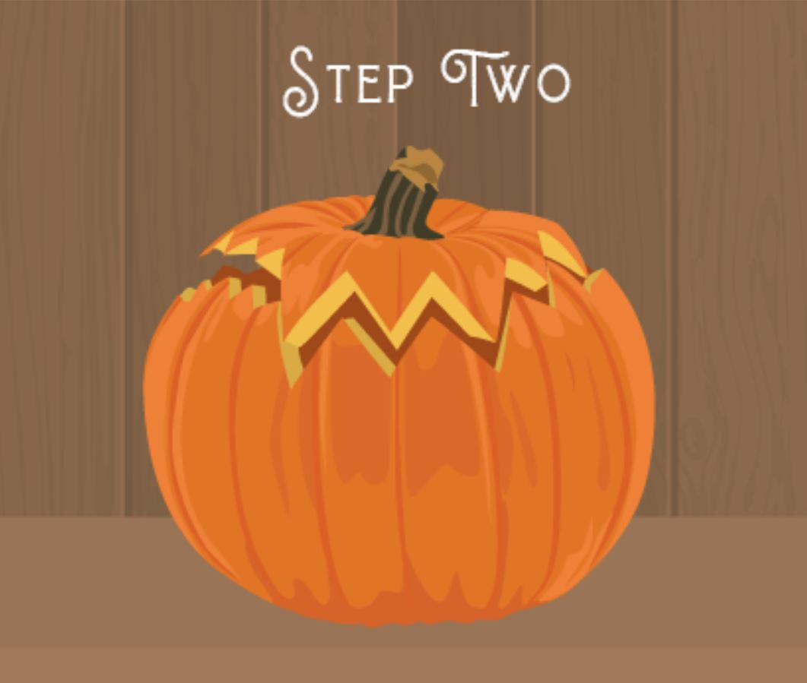
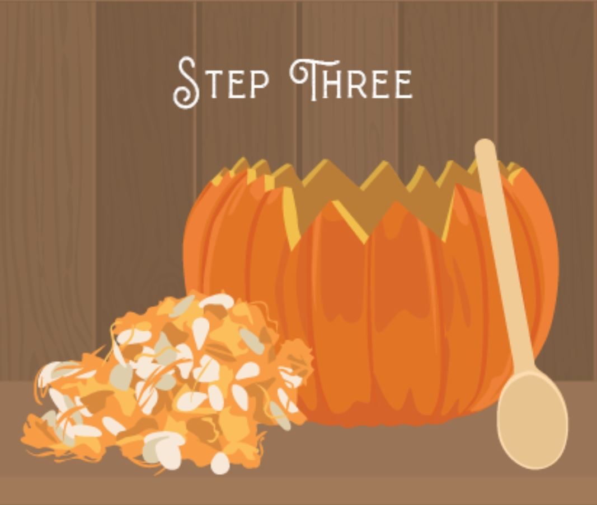
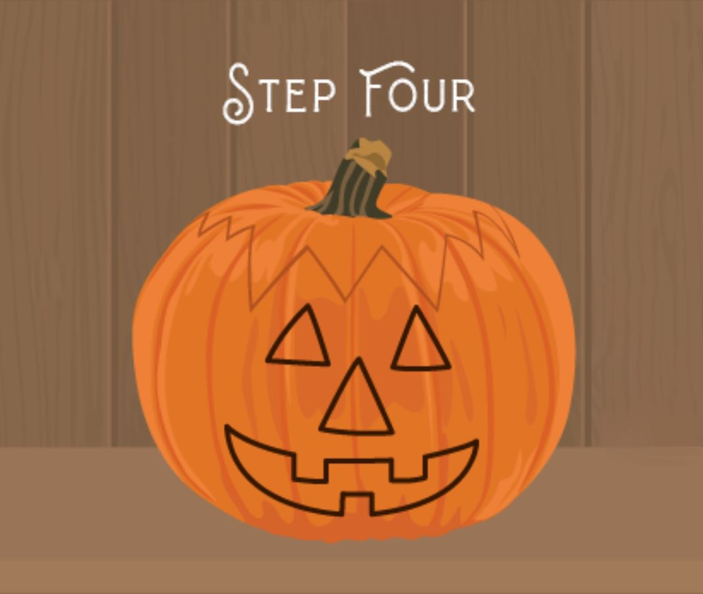
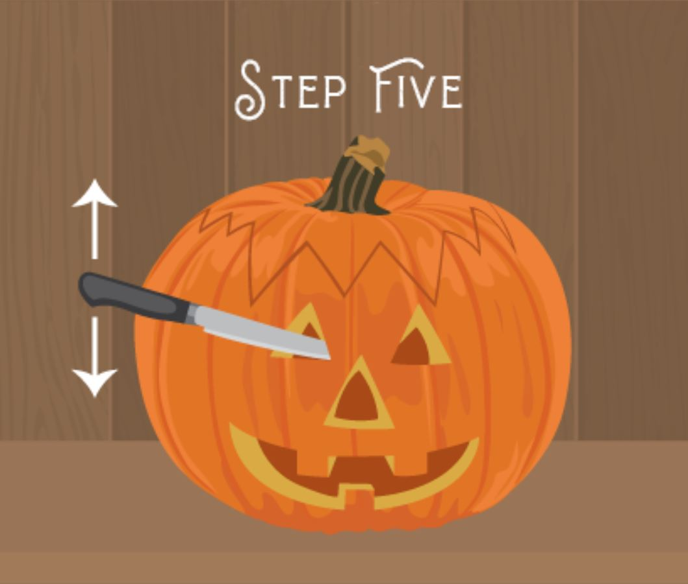
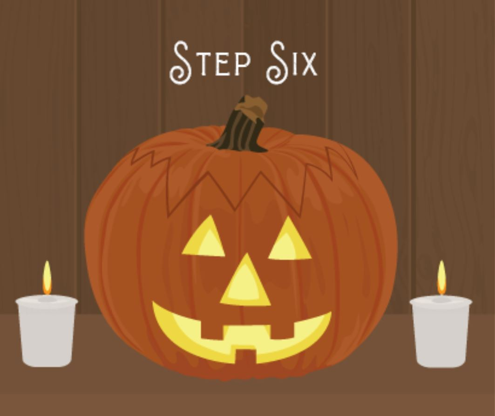

Carving pumpkins has been an American Halloween tradition for nearly 200 years. The jack-o-lantern was popularized in America after adaptations of Washington Irving's short story The Legend of Sleepy Hollow in 1820. The custom of making jack-o-lanterns at Halloween, however, comes from 19th century Ireland. It was believed that spirits of the dead walked the earth every Halloween and that jack-o-lanterns warded off evil spirits. Follow along with the steps outlined below and make your very own!
| Supplies |
|---|
|
Step 1: Choose a large pumpkin with a sturdy stem and flat base.
Step 2: Create a lid by cutting at a 45 degree angle in a zig zag pattern.
Step 3: Scoop out the insides.
Step 4: Trace the design of your choice.
Step 5: Make slow cuts that are straight up and down.
Step 6: Add a tea light!